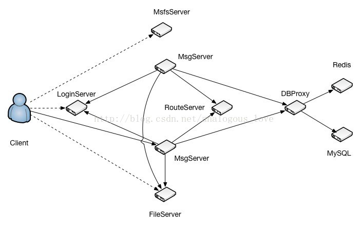

05 服务器端msg_server源码分析
在分析msg_server的源码之前，我们先简单地回顾一下msg_server在整个服务器系统中的位置和作用：

各个服务程序的作用描述如下：
- LoginServer (C++): 负载均衡服务器，分配一个负载小的MsgServer给客户端使用
- MsgServer (C++): 消息服务器，提供客户端大部分信令处理功能，包括私人聊天、群组聊天等
- RouteServer (C++): 路由服务器，为登录在不同MsgServer的用户提供消息转发功能
- FileServer (C++): 文件服务器，提供客户端之间得文件传输服务，支持在线以及离线文件传输
- MsfsServer (C++): 图片存储服务器，提供头像，图片传输中的图片存储服务
- DBProxy (C++): 数据库代理服务器，提供mysql以及redis的访问服务，屏蔽其他服务器与mysql与redis的直接交互
- HttpMsgServer(C++) :对外接口服务器，提供对外接口功能。（目前只是框架）
- PushServer(C++): 消息推送服务器，提供IOS系统消息推送。（IOS消息推送必须走apns）
从上面的介绍中，我们可以看出TeamTalk是支持分布式部署的一套聊天服务器程序，通过分布式部署可以实现分流和支持高数量的用户同时在线。msg_server是整个服务体系的核心系统，可以部署多个，不同的用户可以登录不同的msg_server。这套体系有如下几大亮点：
login_server可以根据当前各个msg_server上在线用户数量，来决定一个新用户登录到哪个msg_server，从而实现了负载平衡；
route_server可以将登录在不同的msg_server上的用户的聊天消息发给目标用户；
通过单独的一个数据库操作服务器db_proxy_server，避免了msg_server直接操作数据库，将数据库操作的入口封装起来。
在前一篇文章《服务器端db_proxy_server源码分析》中，我介绍了每个服务如何接收连接、读取数据并解包、以及组装数据包发包的操作，这篇文章我将介绍作为客户端，一个服务如何连接另外一个服务。这里msg_server在启动时会同时连接db_proxy_server，login_server，file_server，route_server，push_server。在msg_server服务main函数里面有如下初始化调用：
//连接file_server
init_file_serv_conn(file_server_list, file_server_count);
//连接db_proxy_server
init_db_serv_conn(db_server_list2, db_server_count2, concurrent_db_conn_cnt);
//连接login_server
init_login_serv_conn(login_server_list, login_server_count, ip_addr1, ip_addr2, listen_port, max_conn_cnt);
//连接push_server
init_route_serv_conn(route_server_list, route_server_count);
//连接push_server
init_push_serv_conn(push_server_list, push_server_count);
其中每个连接服务的流程都是一样的。我们这里以第一个连接file_server为例：
void init_file_serv_conn(serv_info_t* server_list, uint32_t server_count)
{
g_file_server_list = server_list;
g_file_server_count = server_count;
serv_init<CFileServConn>(g_file_server_list, g_file_server_count);
netlib_register_timer(file_server_conn_timer_callback, NULL, 1000);
s_file_handler = CFileHandler::getInstance();
}
template <class T>
void serv_init(serv_info_t* server_list, uint32_t server_count)
{
for (uint32_t i = 0; i < server_count; i++) {
T* pConn = new T();
pConn->Connect(server_list[i].server_ip.c_str(), server_list[i].server_port, i);
server_list[i].serv_conn = pConn;
server_list[i].idle_cnt = 0;
server_list[i].reconnect_cnt = MIN_RECONNECT_CNT / 2;
}
}
模板函数serv_init展开参数后实际上是调用CFileServConn->Connect()，我们看这个函数的调用：
void CFileServConn::Connect(const char* server_ip, uint16_t server_port, uint32_t idx)
{
log("Connecting to FileServer %s:%d ", server_ip, server_port);
m_serv_idx = idx;
m_handle = netlib_connect(server_ip, server_port, imconn_callback, (void*)&g_file_server_conn_map);
if (m_handle != NETLIB_INVALID_HANDLE) {
g_file_server_conn_map.insert(make_pair(m_handle, this));
}
}
在这个函数里面创建连接socket，将该socket加入全局map g_file_server_conn_map中保存，map的key是socket句柄值，值是当前连接对象CFileServConn的指针。注意这里设置了回调函数imconn_callback。我们来看netlib_connect()实际连接的代码：
net_handle_t netlib_connect(
const char* server_ip,
uint16_t port,
callback_t callback,
void* callback_data)
{
CBaseSocket* pSocket = new CBaseSocket();
if (!pSocket)
return NETLIB_INVALID_HANDLE;
net_handle_t handle = pSocket->Connect(server_ip, port, callback, callback_data);
if (handle == NETLIB_INVALID_HANDLE)
delete pSocket;
return handle;
}
net_handle_t CBaseSocket::Connect(const char* server_ip, uint16_t port, callback_t callback, void* callback_data)
{
log("CBaseSocket::Connect, server_ip=%s, port=%d", server_ip, port);
m_remote_ip = server_ip;
m_remote_port = port;
m_callback = callback;
m_callback_data = callback_data;
m_socket = socket(AF_INET, SOCK_STREAM, 0);
if (m_socket == INVALID_SOCKET)
{
log("socket failed, err_code=%d", _GetErrorCode());
return NETLIB_INVALID_HANDLE;
}
_SetNonblock(m_socket);
_SetNoDelay(m_socket);
sockaddr_in serv_addr;
_SetAddr(server_ip, port, &serv_addr);
int ret = connect(m_socket, (sockaddr*)&serv_addr, sizeof(serv_addr));
if ( (ret == SOCKET_ERROR) && (!_IsBlock(_GetErrorCode())) )
{
log("connect failed, err_code=%d", _GetErrorCode());
closesocket(m_socket);
return NETLIB_INVALID_HANDLE;
}
m_state = SOCKET_STATE_CONNECTING;
AddBaseSocket(this);
CEventDispatch::Instance()->AddEvent(m_socket, SOCKET_ALL);
return (net_handle_t)m_socket;
}
注意这里有以下几点：
将socket设置成非阻塞的。这样如果底层连接函数connect()不能立马完成，connect会立刻返回。
将socket的状态设置成SOCKET_STATE_CONNECTING。
AddBaseSocket(this)将该socket加入一个全局map中。
关注该socket的所有事件（SOCKET_ALL）。
enum {
SOCKET_READ = 0x1,
SOCKET_WRITE = 0x2,
SOCKET_EXCEP = 0x4,
SOCKET_ALL = 0x7
};
因为socket是非阻塞，所以connect可能没连接成功，也会立即返回。那连接成功以后，我们如何得知呢？还记得上一篇文章中介绍的主线程的消息泵吗？TeamTalk每个服务的主线程都有一个这样的消息泵：
while(退出条件)
{
//1. 遍历定时器队列，检测是否有定时器事件到期，有则执行定时器的回调函数
//2. 遍历其他任务队列，检测是否有其他任务需要执行，有，执行之
//3. 检测socket集合，分离可读、可写和异常事件
//4. 处理socket可读事件
//5. 处理socket可写事件
//6. 处理socket异常事件
}
当socket连接成功以后，该socket立马会变的可写。此时会触发第5步中的可写事件：
void CBaseSocket::OnWrite()
{
#if ((defined _WIN32) || (defined __APPLE__))
CEventDispatch::Instance()->RemoveEvent(m_socket, SOCKET_WRITE);
#endif
if (m_state == SOCKET_STATE_CONNECTING)
{
int error = 0;
socklen_t len = sizeof(error);
#ifdef _WIN32
getsockopt(m_socket, SOL_SOCKET, SO_ERROR, (char*)&error, &len);
#else
getsockopt(m_socket, SOL_SOCKET, SO_ERROR, (void*)&error, &len);
#endif
if (error) {
m_callback(m_callback_data, NETLIB_MSG_CLOSE, (net_handle_t)m_socket, NULL);
} else {
m_state = SOCKET_STATE_CONNECTED;
m_callback(m_callback_data, NETLIB_MSG_CONFIRM, (net_handle_t)m_socket, NULL);
}
}
else
{
m_callback(m_callback_data, NETLIB_MSG_WRITE, (net_handle_t)m_socket, NULL);
}
}
由于该socket的状态是SOCKET_STATE_CONNECTING，会走第一个if分支。在不出错的情况下，以参数NETLIB_MSG_CONFIRM调用之前设置的回调函数imconn_callback。
void imconn_callback(void* callback_data, uint8_t msg, uint32_t handle, void* pParam)
{
NOTUSED_ARG(handle);
NOTUSED_ARG(pParam);
if (!callback_data)
return;
ConnMap_t* conn_map = (ConnMap_t*)callback_data;
CImConn* pConn = FindImConn(conn_map, handle);
if (!pConn)
return;
//log("msg=%d, handle=%d ", msg, handle);
switch (msg)
{
case NETLIB_MSG_CONFIRM:
pConn->OnConfirm();
break;
case NETLIB_MSG_READ:
pConn->OnRead();
break;
case NETLIB_MSG_WRITE:
pConn->OnWrite();
break;
case NETLIB_MSG_CLOSE:
pConn->OnClose();
break;
default:
log("!!!imconn_callback error msg: %d ", msg);
break;
}
pConn->ReleaseRef();
}
这次走pConn->OnConfirm();分支，由于pConn实际是CImConn的子类对象，根据C++多态性，会调用CFileServConn的OnConfirm()函数：
void CFileServConn::OnConfirm()
{
log("connect to file server success ");
m_bOpen = true;
m_connect_time = get_tick_count();
g_file_server_list[m_serv_idx].reconnect_cnt = MIN_RECONNECT_CNT / 2;
//连上file_server以后，给file_server发送获取ip地址的数据包
IM::Server::IMFileServerIPReq msg;
CImPdu pdu;
pdu.SetPBMsg(&msg);
pdu.SetServiceId(SID_OTHER);
pdu.SetCommandId(CID_OTHER_FILE_SERVER_IP_REQ);
SendPdu(&pdu);
}
连接上file_server后，msg_server会立即给file_server发一个数据包，以获得file_server的ip地址等信息。
这就是msg_server作为客户端连接其他服务的流程。与这些服务之间的连接都对应一个连接对象：
file_server CFileServConn
db_proxy_server CDBServConn
login_server CLoginServConn
route_server CRouteServConn
push_server CPushServConn
而且，和连接file_server一样，msg_server在连接这些服务成功以后，可能会需要将自己的一些状态信息告诉对方：
- 连接file_server成功后，给对方发包获取对方的ip地址等信息
- 连接login_server成功以后,告诉login_server自己的ip地址、端口号和当前登录的用户数量和可容纳的最大用户数量，这样login_server将来对于一个需要登录的用户，会根据不同的msg_server的负载状态来决定用户到底登录哪个msg_server。
void CLoginServConn::OnConfirm()
{
log("connect to login server success ");
m_bOpen = true;
g_login_server_list[m_serv_idx].reconnect_cnt = MIN_RECONNECT_CNT / 2;
uint32_t cur_conn_cnt = 0;
uint32_t shop_user_cnt = 0;
//连接login_server成功以后,告诉login_server自己的ip地址、端口号
//和当前登录的用户数量和可容纳的最大用户数量
list<user_conn_t> user_conn_list;
CImUserManager::GetInstance()->GetUserConnCnt(&user_conn_list, cur_conn_cnt);
char hostname[256] = {0};
gethostname(hostname, 256);
IM::Server::IMMsgServInfo msg;
msg.set_ip1(g_msg_server_ip_addr1);
msg.set_ip2(g_msg_server_ip_addr2);
msg.set_port(g_msg_server_port);
msg.set_max_conn_cnt(g_max_conn_cnt);
msg.set_cur_conn_cnt(cur_conn_cnt);
msg.set_host_name(hostname);
CImPdu pdu;
pdu.SetPBMsg(&msg);
pdu.SetServiceId(SID_OTHER);
pdu.SetCommandId(CID_OTHER_MSG_SERV_INFO);
SendPdu(&pdu);
}
- 连接route_server成功以后，给route_server发包告诉当前登录在本msg_server上有哪些用户（用户id、用户状态、用户客户端类型）。这样将来A用户给B发聊天消息，msg_server将该聊天消息转给route_server，route_server就知道用户B在哪个msg_server上了，以便将该聊天消息发给B所在的msg_server。
void CRouteServConn::OnConfirm()
{
log("connect to route server success ");
m_bOpen = true;
m_connect_time = get_tick_count();
g_route_server_list[m_serv_idx].reconnect_cnt = MIN_RECONNECT_CNT / 2;
if (g_master_rs_conn == NULL) {
update_master_route_serv_conn();
}
//连接route_server成功以后，给route_server发包告诉当前登录在本msg_server上有哪些
//用户（用户id、用户状态、用户客户端类型）
list<user_stat_t> online_user_list;
CImUserManager::GetInstance()->GetOnlineUserInfo(&online_user_list);
IM::Server::IMOnlineUserInfo msg;
for (list<user_stat_t>::iterator it = online_user_list.begin(); it != online_user_list.end(); it++) {
user_stat_t user_stat = *it;
IM::BaseDefine::ServerUserStat* server_user_stat = msg.add_user_stat_list();
server_user_stat->set_user_id(user_stat.user_id);
server_user_stat->set_status((::IM::BaseDefine::UserStatType)user_stat.status);
server_user_stat->set_client_type((::IM::BaseDefine::ClientType)user_stat.client_type);
}
CImPdu pdu;
pdu.SetPBMsg(&msg);
pdu.SetServiceId(SID_OTHER);
pdu.SetCommandId(CID_OTHER_ONLINE_USER_INFO);
SendPdu(&pdu);
}
再来提一下，心跳包机制，和上一篇文章中介绍个与db_proxy_server一样，都是在定时器里面做的，这里不再赘述了，简单地贴出与file_server的心跳包代码吧：
void init_file_serv_conn(serv_info_t* server_list, uint32_t server_count)
{
g_file_server_list = server_list;
g_file_server_count = server_count;
serv_init<CFileServConn>(g_file_server_list, g_file_server_count);
netlib_register_timer(file_server_conn_timer_callback, NULL, 1000);
s_file_handler = CFileHandler::getInstance();
}
void file_server_conn_timer_callback(void* callback_data, uint8_t msg, uint32_t handle, void* pParam)
{
ConnMap_t::iterator it_old;
CFileServConn* pConn = NULL;
uint64_t cur_time = get_tick_count();
for (ConnMap_t::iterator it = g_file_server_conn_map.begin(); it != g_file_server_conn_map.end();
)
{
it_old = it;
it++;
pConn = (CFileServConn*)it_old->second;
pConn->OnTimer(cur_time);
}
// reconnect FileServer
serv_check_reconnect<CFileServConn>(g_file_server_list, g_file_server_count);
}
在注册的定时器回调函数里面调用CFileServConn::OnTimer函数：
void CFileServConn::OnTimer(uint64_t curr_tick)
{
if (curr_tick > m_last_send_tick + SERVER_HEARTBEAT_INTERVAL) {
IM::Other::IMHeartBeat msg;
CImPdu pdu;
pdu.SetPBMsg(&msg);
pdu.SetServiceId(SID_OTHER);
pdu.SetCommandId(CID_OTHER_HEARTBEAT);
SendPdu(&pdu);
}
if (curr_tick > m_last_recv_tick + SERVER_TIMEOUT) {
log("conn to file server timeout ");
Close();
}
}
接下来的就是每个连接上的业务处理代码了，主消息泵收到数据后触发OnRead函数，然后收取数据解包，然后根据包的命令号处理包，所以每个连接对象根据自己的业务都有一个HandlePdu()函数，例如CFileServConn的：
void CFileServConn::HandlePdu(CImPdu* pPdu)
{
switch (pPdu->GetCommandId()) {
case CID_OTHER_HEARTBEAT:
break;
case CID_OTHER_FILE_TRANSFER_RSP:
_HandleFileMsgTransRsp(pPdu);
break;
case CID_OTHER_FILE_SERVER_IP_RSP:
_HandleFileServerIPRsp(pPdu);
break;
default:
log("unknown cmd id=%d ", pPdu->GetCommandId());
break;
}
}
当然有些数据包，msg_server直接自己装包应答就可以了。有些必须发到其他服务进行进一步处理，比如登录请求，发给db_proxy_server拿到mysql中校验用户名和密码，db_proxy_server校验完成后，再应答msg_server，msg_server再应答客户端。
这大概就是msg_server服务的结构和源码了吧。具体业务代码你可以查看每个连接对象的HandlePdu()函数来看具体的流程细节。
需要指出的是：连接服务器、接受连接、收取数据解包、发送数据这四个模块是一个完整的网路库必须具有的东西。这篇文章和上一篇文章完整地介绍了这四个模块，而TeamTalk的实现手法也是目前主流网络库的通用做法。如果从事服务器开发，必须熟练掌握这里面的具体每个细节。而teamtalk服务器这种分布式架构设计的思想也是非常值得学习和借鉴的。